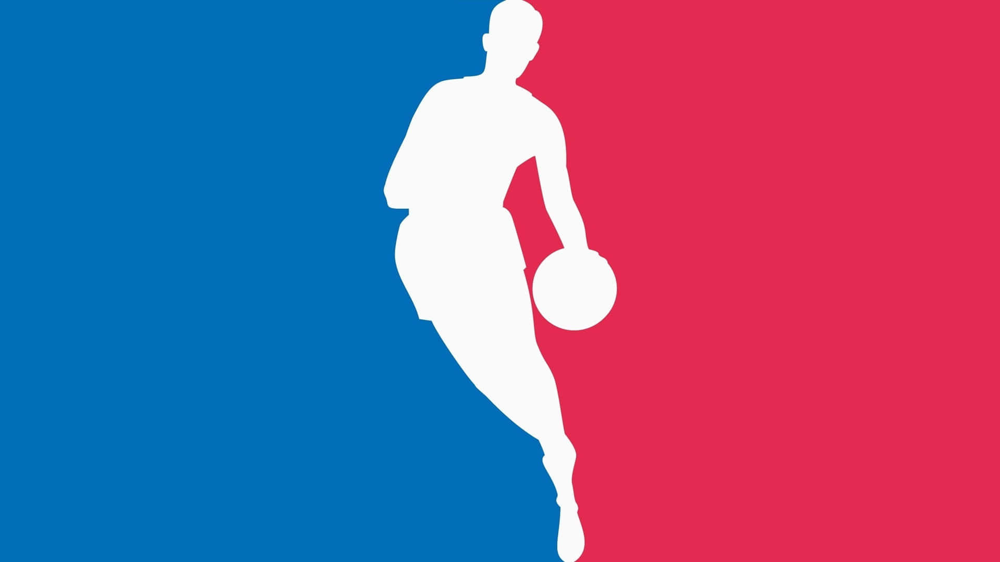

Bienvenido al mundo de la NBA
La NBA es la liga de baloncesto más importante del mundo, donde juegan los mejores jugadores del planeta.
En este sitio hablaremos de uno de los equipos más históricos, Los Lakers, y de una de las estrellas actuales: Luka Dončić.

Sobre este sitio
Explorá información detallada, estadísticas y registrate para recibir novedades.
Volver arriba